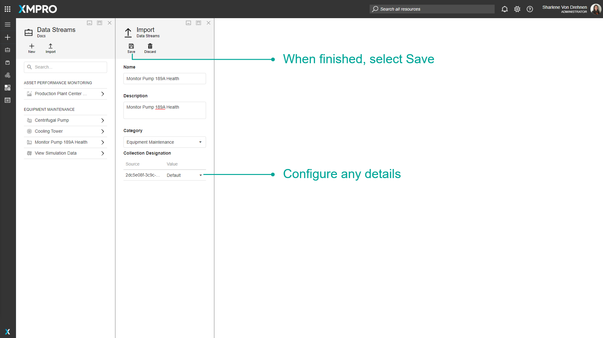
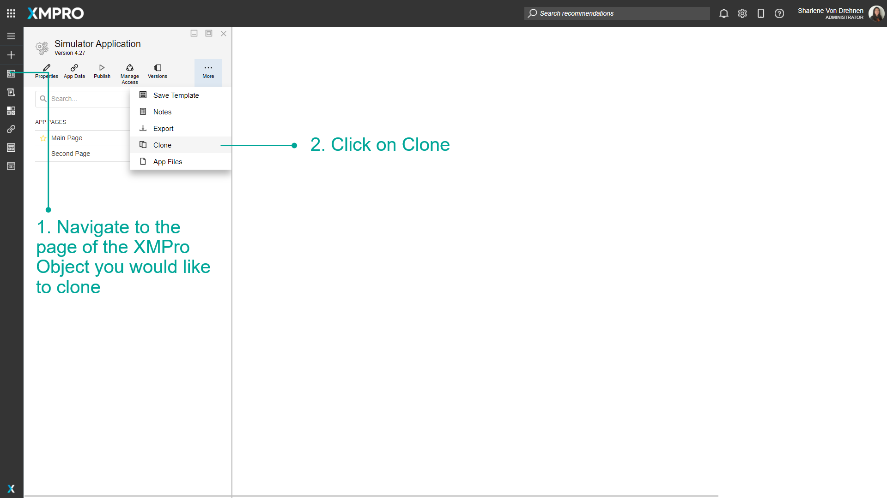
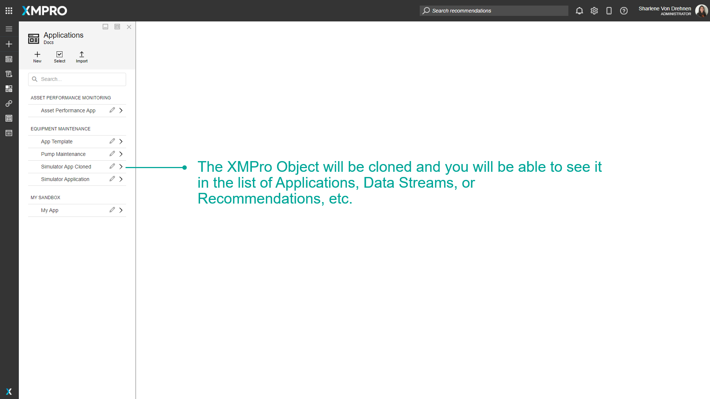

Import, Export, and Clone
All XMPro Objects allow you to export them as a file and import them to other companies or instances of XMPro Products. This allows you to continue working on the same XMPro Object such as a Data Stream or Application in a different environment without losing all your work or having to start from scratch.
Exporting
All XMPro Objects (Agents, Applications, Data Streams, and Recommendations) can be exported as a file with a corresponding file extension.
| XMPro Object | Extension |
|---|---|
| Agents | .xmp |
| Connectors | .xmp |
| Applications | .xapp |
| App Pages | .xapg |
| Data Streams | .xuc |
| Recommendations | .xr |
| Forms | .xfm |
This functionality is made available on an XMPro Object's corresponding page, by selecting the "export" option. When an XMPro Object is exported, only the latest version will be exported. Thus, if someone imports an XMPro Object, it will be assigned a new ID and contain only one version – the latest version that was exported.
Before the exported file is created and downloaded, you will be asked for a password to encrypt the file. The person that imports the Data Stream will have to enter the correct password in order to import it.
The App export has an advanced option that allows you to choose which files are included - by default files design time files are included and the uploads folder (runtime files) are excluded. When ticked, you can choose whether to include files that were added at runtime or exclude all files.
To export any XMPro Object, follow the steps below:
- Navigate to the page of the XMPro Object you would like to export.
- Click on _Export (_For the Data Stream Designer, click on Properties first, then click on Export).
- Choose a strong password to encrypt the file. The person importing the file must enter the same password.
- Click on Ok.
- The exported file will appear in your downloads.


Note
To export a Widget, follow the steps in Manage Widgets.
Importing
All XMPro Objects (Agents, Applications, Data Streams, and Recommendations) can also be imported into other companies or instances of XMPro, to avoid needing to replicate a particular Data Stream or Application from scratch. Importing is done from a different location as exporting, which is on the page for the corresponding feature.
To import any XMPro Object, follow the steps below:
- Navigate to the page of the XMPro Object you would like to import.
- Click on Import.
- Upload the corresponding import file for the XMPro Object.
- Enter the password.
- Click on Upload.

6. Configure any details.
7. When finished, select Save.

Note
To import an App Page, follow the steps in Import an App Page.
Note
To import a Widget, follow the steps in Manage Widgets.
Cloning
To clone any XMPro Object, follow the steps below:
- Navigate to the page of the XMPro Object you would like to clone.
- Click on Clone.

3. Give the cloned XMPro Object a new name.
4. Select the version of the app you would like to clone.
5. Click on Ok.

The XMPro Object will be cloned and you will be able to see it in the list of Applications, Data Streams, or Recommendations, etc.

Last modified: May 29, 2025